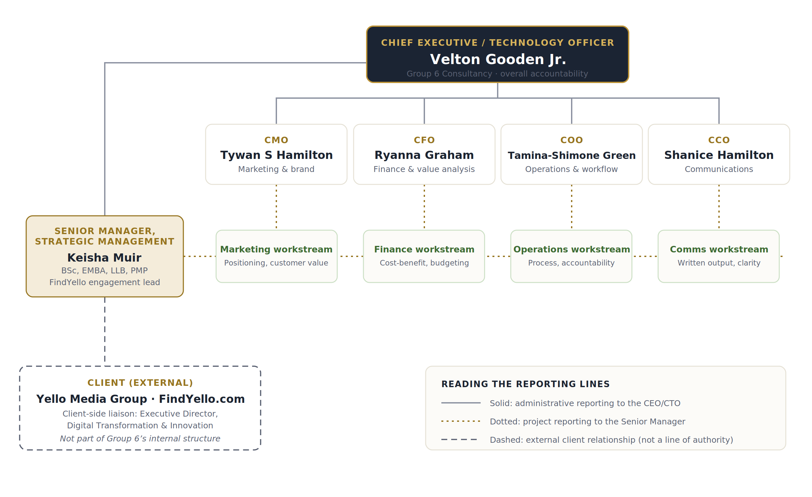

01
Review the assignment requirements
The group confirmed the deliverables: roles and tasks, the working framework and attendance record, and the three-part organisational structure question.
Group 6 Hub / Assignment 03
Strategic Management · Assignment 3
Group roles, working framework, organisational structure, and the appointment of the engagement lead
For this assignment Group 6 operates as an independent strategic management consultancy engaged by Yello Media Group, the client, to deliver the FindYello.com modernisation project. The group ran a quasi-recruitment process to appoint the Senior Manager in charge of Strategic Management and designed the organisational structure needed to deliver the engagement.
Section 01 · Roles
Velton Gooden Jr. continues as Group CEO with a dual CEO/CTO function, a selection the group made by consensus at the start of the project because this engagement is a digital platform redevelopment.
For Assignment 3 the tasks were split along the structure of the question itself, with each member owning a numbered part and the CEO consolidating the whole into the final submission.
| Group Member | Role | Assigned Task(s) |
|---|---|---|
| Velton Gooden Jr. | CEO / CTO | Parts 1 and 2 (group roles, working framework, and attendance record), plus formatting, consolidation, and final submission of the assignment. |
| Ryanna Graham | CFO | Part 3A: identify and describe the type of organisational structure for the business and project. |
| Tamina-Shimone Green | COO | Part 3B: represent the structure by diagram, including the Senior Manager in charge of Strategic Management and all reporting lines. |
| Tywan S Hamilton | CMO | Part 3C: identify three challenges the group foresees and how it intends to manage them to smooth operations and minimise conflict daily. |
| Shanice Hamilton | Chief Communications Officer | Final-read review of the combined response for clarity and consistency ahead of submission. |
Section 02 · Framework
Group 6 held one formal meeting for this assignment, the Group 6 Assignment 3 Discussion on Wednesday 8 July from 7:00 to 7:30 PM via Google Meet, with follow-up coordination handled through the group's Telegram channel.
The group confirmed the deliverables: roles and tasks, the working framework and attendance record, and the three-part organisational structure question.
The Group 6 Assignment 3 Discussion was held via Google Meet on 8 July to settle the approach and divide the work.
The group agreed that Group 6 operates as an independent consultancy firm assisting FindYello with the revamp project, so Yello Media Group is the client and Group 6 remains its own organisation.
Rather than inventing a role holder, the group shortlisted real Jamaican professionals from LinkedIn and assessed them against the needs of the engagement.
Each member took ownership of a numbered part of the assignment, with the CEO carrying the framework, attendance, and final consolidation.
Member contributions were reviewed, harmonised into one voice, formatted, and submitted through Moodle alongside the updated project website.
Section 03 · Attendance
One formal meeting was held for this assignment. The record below covers the Group 6 Assignment 3 Discussion of Wednesday 8 July, 7:00 to 7:30 PM, conducted via Google Meet.
| Date | Meeting / Purpose | Member | Attendance | Task / Contribution |
|---|---|---|---|---|
| July 8 | Assignment 3 Discussion (Google Meet) | Velton Gooden Jr. | Present | Chaired the meeting; proposed the consultancy framing and the quasi-recruitment approach; took parts 1, 2, and final formatting. |
| July 8 | Assignment 3 Discussion (Google Meet) | Ryanna Graham | Present | Assigned part 3A, the identification and description of the organisational structure. |
| July 8 | Assignment 3 Discussion (Google Meet) | Tamina-Shimone Green | Present | Assigned part 3B, the structure diagram with all reporting lines. |
| July 8 | Assignment 3 Discussion (Google Meet) | Tywan S Hamilton | Present | Assigned part 3C, the three foreseen challenges and their management. |
| July 8 | Assignment 3 Discussion (Google Meet) | Shanice Hamilton | Present | Assigned the final-read review of the combined response before submission. |
Section 04 · Recruitment
Given the business and the nature of the project, the group ran a quasi-recruitment process: three Jamaican professionals with public LinkedIn profiles were shortlisted and assessed against the demands of a digital platform modernisation delivered by an external consultancy.
BSc · EMBA · LLB · PMP
Senior Project Management Consultant at Digicel Group, with earlier consulting engagements in data management and banking and a previous tenure as an IT Director. Brings certified project discipline, enterprise technology leadership, and strategic business training to the engagement.
Executive Director, Digital Transformation & Innovation, Yello Media Group
Deep, direct knowledge of the client's digital transformation agenda. Precisely because he sits inside the client organisation, appointing him to lead the consultancy's engagement would compromise the independence that gives Group 6's recommendations their value.
Renovator, Ideator, Creator, Developer
A creative and product-minded professional whose strengths sit closest to ideation and build execution. Those capabilities serve the project best within delivery workstreams rather than in the senior strategic management seat this engagement requires.
The FindYello.com modernisation is, at its core, a large digital delivery programme wrapped inside a strategic repositioning. The Senior Manager in charge of Strategic Management must therefore hold two competencies at once: the strategic judgement to keep the engagement aligned with Yello Media Group's long-term direction, and the delivery discipline to move a complex technology programme through scoping, execution, and handover without drift.
Muir's profile answers both. Her PMP certification and current role as Senior Project Management Consultant at Digicel Group, one of the Caribbean's largest telecommunications and digital services companies, demonstrate proven capacity to run technology programmes at regional scale. Her consulting history in data management speaks directly to the single most important asset in a directory business: the accuracy, verification, and governance of listing data. Her earlier experience leading projects in banking that improved customer experience and data availability mirrors the consumer-facing and analytics ambitions of the FindYello revamp, and her tenure as an IT Director shows she has carried enterprise technology accountability, not merely advised on it.
Her academic formation completes the case. The EMBA supplies the strategic management frameworks the role is named for, while the LLB adds working fluency in contracts and data protection obligations, both live concerns for a platform handling business listings and consumer data across multiple jurisdictions. As an external, independent professional, she also preserves the consultancy's objectivity in a way a client-side executive could not. Group 6 will work in conjunction with her, with the CEO/CTO retaining overall accountability for the engagement.
Section 05 · Structure (3A)
Group 6 operates the consultancy as a matrix organisation, overlaying a project reporting axis on a functional executive axis.
The Functional Axis
Each member holds a permanent functional role: marketing, finance, operations, and communications, under the administrative authority of the CEO/CTO. This preserves clear ownership of each discipline and a stable home for skills, standards, and accountability between engagements.
The Project Axis
The Senior Manager in charge of Strategic Management leads the FindYello engagement and draws on each function through dedicated project workstreams. Team members therefore answer to the CEO/CTO administratively and to the Senior Manager for project delivery.
Why Not the Alternatives
A purely functional structure would silo the client work; a fully projectised structure would dissolve the consultancy's permanent identity into a single engagement. The matrix keeps both: a durable firm and a focused project team, which is how professional services firms of this size typically deliver client work.
Section 06 · Diagram (3B)
The diagram shows the Senior Manager in charge of Strategic Management within the matrix, with every reporting line: solid administrative lines to the CEO/CTO, dotted project lines to the Senior Manager, and a dashed external relationship to the client.

Group 6 Consultancy matrix structure for the FindYello.com modernisation engagement.
Section 07 · Challenges (3C)
Each challenge below is specific to this organisation: a small matrix consultancy of part-time student-consultants serving an external client. For each, the group has defined the daily management practices intended to smooth operations and minimise conflict.
The matrix deliberately gives every member two managers: the CEO/CTO administratively and the Senior Manager for project work. Without clear rules, the same person can receive conflicting instructions in the same week, which is the classic source of friction in matrix organisations.
Every member balances this engagement against studies, work, and personal obligations, and the group's own attendance history shows that emergencies do arise. A small team has no slack: one silent absence can stall an entire workstream.
A modernisation project invites expansion: every stakeholder conversation surfaces one more feature the platform could have. Because Group 6 is external to Yello Media Group, unmanaged scope growth would strain a fixed-capacity team and blur accountability between consultant and client.